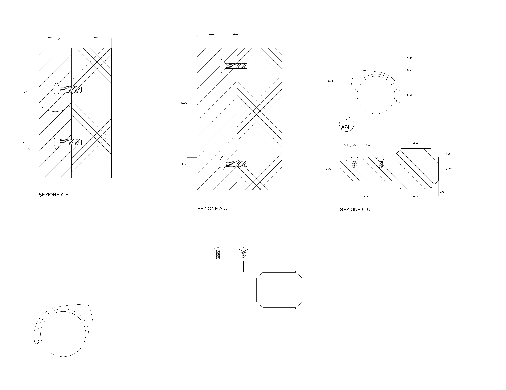
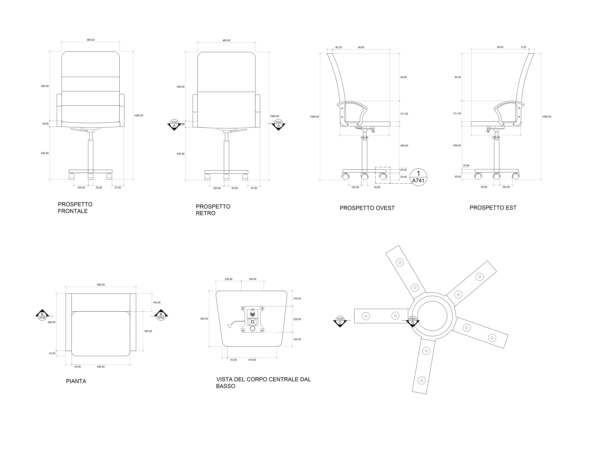

MO-D_2

Descrizione prodotto
essuto rivestito: 75% poliestere, 25% cotone, 100% poliuretano
Parti principali/ Struttura braccioli: Plastica propilenica
Parte 01: Acciaio, Galvanizzato
Struttura schienale: Acciaio, Rivestimento epossidico/poliestere a polvere
Imbottitura del sedile: Poliuretano espanso, kg 35/m3, Ovatta di poliestere
PROSPETTI E SEZIONI
DETTAGLI
ABACO ELEMENTI

Sito sviluppato per il corso di Strumenti e Metodi del progetto